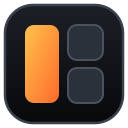

Nero/taskbar
Part 5 of 5A taskbar on every monitor.
Dash to Panel and Argos, set up by one command.
App grid
One icon per app
nero sysmon, every second
Clock
5h
wk
↓ 2.4 ↑ 0.3
RAM
CPU 48° 12%
GPU 41° 6%
14:3227 Nov
$ nero taskbar setupYour old settings are saved first. nero taskbar undo puts them back.